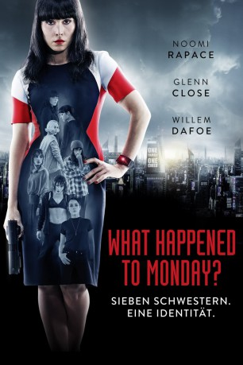

gesehen am 19.01.2019
gesehen am 19.01.2019Alternativ: What Happened to Monday gesehen am 19.01.2019
 
 IMDB-Wertung: 6.9 / 10
IMDB-Wertung: 6.9 / 10  Metascore:
Metascore: 
In einer nahen Zukunft haben Überbevölkerung und Hungersnot zu einer drastischen Ein-Kind-Politik geführt. Dadurch sind sieben identisch aussehende Schwestern zu einem Versteckspiel gezwungen, um der Verfolgung durch das „Child Allocation Bureau“ unter Leitung der unerbittlichen Nicolette Cayman zu entkommen. Um zu überleben, müssen Monday, Tuesday, Wednesday, Thursday, Friday, Saturday und Sunday, wie die Frauen von ihrem Großvater genannt wurden, die Identität einer fiktiven Person annehmen - Karen Settman. Einmal pro Woche darf jede der Schwestern am Wochentag, dessen Namen sie trägt, an die Öffentlichkeit und am Leben teilnehmen, während die restlichen sechs in der gemeinsamen Wohnung gefangen sind. Das geht so lange gut, bis Monday eines Tages nicht mehr nach Hause zurückkehrt...
Jahr: 2017
Dauer: 123 Minuten
FSK: 16
Land: England Studio: Splendid FilmTonspuren: DTS - ,
Untertitel: Deutsch,
Auflösung: 1080p (1920x808) Größe: 5601 MB
Genre: Action, Thriller, Drama, Sci-Fi, Abenteuer, Krimi, Mystery
Regisseur: Tommy Wirkola
Drehbuch: Max Botkin
Soundtrack: Christian Wibe
Darsteller:
 Noomi Rapace als The Settman Siblings
Noomi Rapace als The Settman Siblings Glenn Close als Nicolette Cayman
Glenn Close als Nicolette Cayman Willem Dafoe als Terrence Settman
Willem Dafoe als Terrence Settman Marwan Kenzari als Adrian Knowles
Marwan Kenzari als Adrian Knowles Christian Rubeck als Joe
Christian Rubeck als Joe Pål Sverre Hagen als Jerry
Pål Sverre Hagen als Jerry Cassie Clare als Zaquia
Cassie Clare als Zaquia Cameron Jack als Dutch
Cameron Jack als Dutch Vegar Hoel als Enforcer Team Leader
Vegar Hoel als Enforcer Team Leader Stig Frode Henriksen als Enforcer #3
Stig Frode Henriksen als Enforcer #3 Lara Decaro als Girl
Lara Decaro als Girl Santiago Cabrera als Infomercial Processor
Santiago Cabrera als Infomercial Processor Jeppe Beck Laursen als Father Beck (uncredited)
Jeppe Beck Laursen als Father Beck (uncredited) Robert Wagner als Charles Benning (uncredited)
Robert Wagner als Charles Benning (uncredited) Sewell Whitney als News Anchor (uncredited)
Sewell Whitney als News Anchor (uncredited)Datei: X:\2017(N-Z)\What Happened to Monday (2017, FSK16, 1920x808).mkv seit 21.02.2018
Festplatte: HD 2017(A-Z)-2018(A-F)
 Es gibt insgesamt 170 Filme in der Gruppe '2017(N-Z)'
Es gibt insgesamt 170 Filme in der Gruppe '2017(N-Z)'